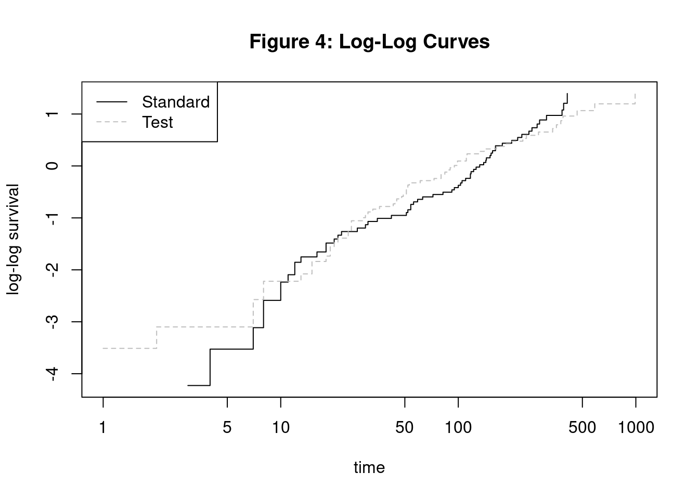
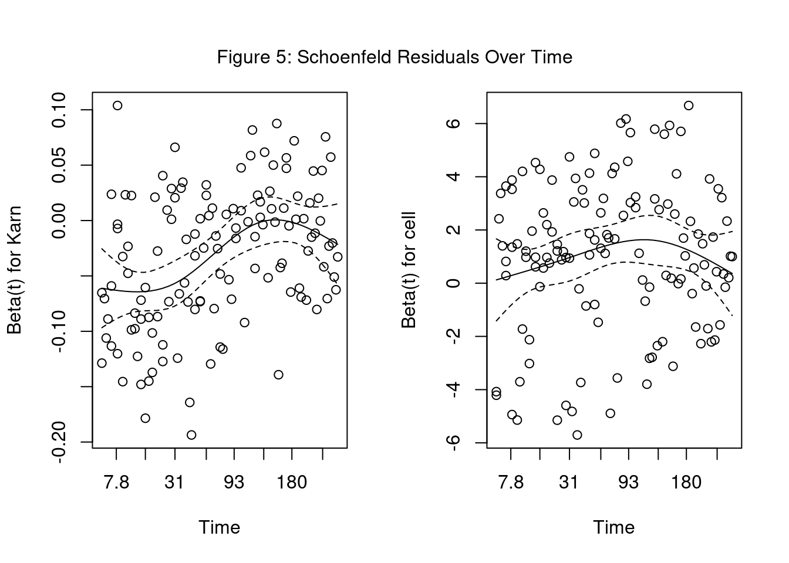

| Attribute | Type | Description |
|---|---|---|
| stime | Numeric | survival or follow-up time, in days |
| status | Numeric | dead or alive/censored; 0 (alive), 1 (dead) |
| treat | Nominal | treatment, either standard or test (chemotherapy); 1 (standard), 2 (test) |
| age | Numeric | patient age in years |
| Karn | Numeric | Karnofsky score of patient performance, on scale of 0 to 100 |
| diag | Numeric | patient time since diagnosis, measured at time of entry to trial, in months |
| cell | Nominal | one of four cell types; 1 (squamous), 2 (small cell), 3 (adeno), 4 (large) |
| prior | Nominal | denotes prior therapy; 10 (yes), 0 (no) |
Cox Proportional Hazards Model
Edwin Alvarado, Darnell Thomas, and Michael Ho
Overview
What is the Cox Proportional Hazards Model?
Known for its ability to handle censored data
Versatile and can achieve comparable results to its parametric counterparts
Applications and Limitations
Mainly used in medical field
While commonly used in medical research, can be applied to other fields, such as finance or social sciences
Limitations concerning time dependent variables
Case Study: VA Lung Cancer Trial
Goals
- Determine if treatment used in trial has positive effect on survival time
- Determine if any other variables have significant effect on survival time
- Properly test assumptions and fit the Cox Proportional Hazards Model
Case Study: VA Lung Cander Trial
Data Definition
Data Preview
| stime | status | treat | age | Karn | diag.time | cell | prior |
|---|---|---|---|---|---|---|---|
| 72 | 1 | 1 | 69 | 60 | 7 | 1 | 0 |
| 411 | 1 | 1 | 64 | 70 | 5 | 1 | 10 |
| 228 | 1 | 1 | 38 | 60 | 3 | 1 | 0 |
| 126 | 1 | 1 | 63 | 60 | 9 | 1 | 10 |
| 118 | 1 | 1 | 65 | 70 | 11 | 1 | 10 |
| 10 | 1 | 1 | 49 | 20 | 5 | 1 | 0 |
Initial Remarks
- 137 Observations of patients with inoperable lung cancer
- Includes Censored Data
- Per the National Cancer Institute, the Karnofsky score is standard way to measure how well a patient can perform ordinary tasks. A higher score indicates a higher ability to do these tasks
Statistic Model
The composition of the model is as follows:
\[ H(t) = H_0(t) \times exp(b_1x_1 + b_2x_2 + ... + b_kx_k) \]
Where \(H_0 (t)\) is considered to be the baseline hazard function of the model. $ b_k $ are model parameters.
Model in R
The Cox PH model in R is ran from the survival package. Below is an example of running the model with a single variable (treat):
Call:
coxph(formula = Y ~ treat, data = VA)
coef exp(coef) se(coef) z p
treat2 0.01774 1.01790 0.18066 0.098 0.922
Likelihood ratio test=0.01 on 1 df, p=0.9218
n= 137, number of events= 128 Interpreting R Output
We use the hazard ratio (HR) to determine the effect of test treatment in comparison with the standard treatment:
\[ HR = {h_{test}(t) \over h_{standard}(t)} = {h_0(t)\times exp(0.0177 \times X_{test}) \over h_0(t) \times exp(0.0177 \times X_{standard})} \] \[ = {exp(0.0177 \times 1) \over exp(0.0177 \times 0)} = 1.018\] This means that the hazard for the test group is 1.02 times the hazard for the standard treatment group. In order words, the test group has a 1.8% more likely to experience the event than the standard group.
Proportional Hazard Assumption
The proportional hazard assumption is means that hazard ratio (HR) is constant over time. This means the predictor variables and regression coefficients are time-independent (no change over course of study).
Methods of checking PH assumption
Graphical view of regression coefficients residuals
Statistical test of residuals
Graphical view of log-log survival curve
Graphical view of regression coefficients residuals
PH assumption is valid when coefficient is constant over time.

Schoenfeld residuals for a variable are the observed value for i-th individual at the “event” time - the weight-average of the variable for other subjects still at risk.
Statistical test of residuals
Test if Schoenfeld residuals are correlated with time. The null hypothesis \(H_0\) is that the residuals are not correlated with time. Rejecting \(H_0\) means the PH assumption is violated. In R, use the cox.zph function.
Graphical view of log-log survival curve
If log-log survival curves are parallel then the PH assumption is appropriate. Since curves cross, PH assumption is violated.
Options when PH assumption not met
Start Cox PH model after certain time period (ie fit model for 180-day survivors)
Stratify on the non-proportional variable and obtain separate models for each group
Use extended Cox model which allows for time-varying coefficients and/or time-dependent variables
Multiple Variable Cox Model in R
Call:
coxph(formula = Y ~ treat + age + Karn + diag.time + cell + prior,
data = VA)
coef exp(coef) se(coef) z p
treat2 2.946e-01 1.343e+00 2.075e-01 1.419 0.15577
age -8.706e-03 9.913e-01 9.300e-03 -0.936 0.34920
Karn -3.282e-02 9.677e-01 5.508e-03 -5.958 2.55e-09
diag.time 8.132e-05 1.000e+00 9.136e-03 0.009 0.99290
cell2 8.616e-01 2.367e+00 2.753e-01 3.130 0.00175
cell3 1.196e+00 3.307e+00 3.009e-01 3.975 7.05e-05
cell4 4.013e-01 1.494e+00 2.827e-01 1.420 0.15574
prior10 7.159e-02 1.074e+00 2.323e-01 0.308 0.75794
Likelihood ratio test=62.1 on 8 df, p=1.799e-10
n= 137, number of events= 128 Checking PH Assumption
Fitting Cox model for 180-day survivors
Only 27 individual left in study after 180 days. Sample too small to make conclusions.
Stratified Cox model
Assumes a different baseline hazard function for each categorical variable.
\[h_g(t) = {h_{0g}(t)} \times \exp(0.286\text{(treat-test)}-0.012\text{(age)}-0.0383\text{(Karn)}-0.0034\text{(diag.time)}+0.169\text{(prior-no)})\] where \[g = 1, 2, 3, 4 \text{ (number of cell types)}\] ## Stratified Cox model in R We the following code for stratifying on cell type.
Call:
coxph(formula = Y ~ treat + age + Karn + diag.time + strata(cell) +
prior, data = VA)
coef exp(coef) se(coef) z p
treat2 0.285902 1.330962 0.210009 1.361 0.173
age -0.011821 0.988249 0.009846 -1.201 0.230
Karn -0.038262 0.962461 0.005932 -6.450 1.12e-10
diag.time -0.003439 0.996567 0.009075 -0.379 0.705
prior10 0.169069 1.184201 0.235667 0.717 0.473
Likelihood ratio test=44.27 on 5 df, p=2.042e-08
n= 137, number of events= 128 Stratified Cox model limitation
Continuous variables like Karnofsky score must be grouped to categories.
Cannot compare the effect of each cell type on survival using hazard ratios (HR).
Stratified Cox model with Interaction
The previous stratified Cox model assumed the coefficients did not vary across cell types. To check this assumption, we fit a Cox model with interaction terms for strata.
coxph(Y ~ treat + age + Karn + diag.time + prior + treat:cell + age:cell + Karn:cell + diag.time:cell +strata(cell) + prior:cell, data=VA)Call:
coxph(formula = Y ~ treat + age + Karn + diag.time + prior +
treat:cell + age:cell + Karn:cell + diag.time:cell + strata(cell) +
prior:cell, data = VA)
coef exp(coef) se(coef) z p
treat2 -0.227963 0.796153 0.409569 -0.557 0.57781
age 0.026812 1.027175 0.023323 1.150 0.25030
Karn -0.032237 0.968277 0.011295 -2.854 0.00432
diag.time 0.044183 1.045173 0.018585 2.377 0.01744
prior10 -0.231601 0.793262 0.421828 -0.549 0.58298
treat1:cell2 -0.847355 0.428547 0.533203 -1.589 0.11202
treat2:cell2 NA NA 0.000000 NA NA
treat1:cell3 -0.283870 0.752864 0.665777 -0.426 0.66984
treat2:cell3 NA NA 0.000000 NA NA
treat1:cell4 -0.901538 0.405945 0.650504 -1.386 0.16578
treat2:cell4 NA NA 0.000000 NA NA
age:cell2 -0.035288 0.965327 0.028387 -1.243 0.21383
age:cell3 -0.099678 0.905128 0.036566 -2.726 0.00641
age:cell4 -0.039678 0.961099 0.036695 -1.081 0.27956
Karn:cell2 0.006414 1.006434 0.015013 0.427 0.66923
Karn:cell3 -0.046307 0.954749 0.021536 -2.150 0.03154
Karn:cell4 -0.023842 0.976440 0.021963 -1.086 0.27767
diag.time:cell2 -0.059080 0.942631 0.023604 -2.503 0.01232
diag.time:cell3 -0.138551 0.870619 0.060599 -2.286 0.02223
diag.time:cell4 -0.072737 0.929846 0.062389 -1.166 0.24367
prior10:cell2 0.519417 1.681047 0.613365 0.847 0.39709
prior10:cell3 1.943418 6.982579 0.941748 2.064 0.03905
prior10:cell4 0.554294 1.740711 0.687617 0.806 0.42018
Likelihood ratio test=67.3 on 20 df, p=5e-07
n= 137, number of events= 128 Likelihood Ratio Test
We can use the Log-Likelihood Ratio Test to determine if there is a significant difference in nested models.
Analysis of Deviance Table
Cox model: response is Y
Model 1: ~ treat + age + Karn + diag.time + strata(cell) + prior
Model 2: ~ treat + age + Karn + diag.time + prior + treat:cell + age:cell + Karn:cell + diag.time:cell + strata(cell) + prior:cell
loglik Chisq Df Pr(>|Chi|)
1 -316.60
2 -305.09 23.027 15 0.08357 .
---
Signif. codes: 0 '***' 0.001 '**' 0.01 '*' 0.05 '.' 0.1 ' ' 1Based on the Log-Likelihood Ratio Test, the no-interaction stratified Cox is sufficient.
Extended Cox model for Time-Varying Coefficients
\[h_i(t)= h_0(t) \times exp(\beta_i(t)Z_i) \]
Used to specify a function for the coefficients that change with time (linear, logarithmic, a step function, etc).
We used a step function for time intervals of 0-90, 90-180, and 180+ days.
Stratified-Extended Cox model
We can both stratify on cell type while using the extended model for the Karnofsky score.
coxph(Surv(tstart, stime, status) ~ treat + age + diag.time + strata(cell) + prior + Karn:strata(tgroup),
data=VA.cp)Call:
coxph(formula = Surv(tstart, stime, status) ~ treat + age + diag.time +
strata(cell) + prior + Karn:strata(tgroup), data = VA.cp)
coef exp(coef) se(coef) z p
treat2 0.160901 1.174569 0.215924 0.745 0.456
age -0.012389 0.987687 0.009893 -1.252 0.210
diag.time -0.004278 0.995731 0.008938 -0.479 0.632
prior10 0.164566 1.178882 0.237594 0.693 0.489
Karn:strata(tgroup)tgroup=1 -0.049032 0.952150 0.006818 -7.192 6.41e-13
Karn:strata(tgroup)tgroup=2 0.008194 1.008228 0.015464 0.530 0.596
Karn:strata(tgroup)tgroup=3 -0.019916 0.980281 0.020078 -0.992 0.321
Likelihood ratio test=57.35 on 7 df, p=5.104e-10
n= 225, number of events= 128 Reducing Model with Likelihood Ratio Test
Analysis of Deviance Table
Cox model: response is Surv(tstart, stime, status)
Model 1: ~ treat + strata(cell) + Karn:strata(tgroup)
Model 2: ~ treat + age + diag.time + strata(cell) + prior + Karn:strata(tgroup)
loglik Chisq Df Pr(>|Chi|)
1 -311.09
2 -310.06 2.0444 3 0.5632Final Stratified-Extended Cox model
Since the difference in Likelihood ratio test is insignificant, we can simplify the model to treat + Karn + cell.
\[h_g(t) = {h_{0g}(t)} \times \exp(0.0988\text{(treat-test)}-0.0464\text{(Karn*tgroup1)}+0.0097\text{(Karn*tgroup2)}-0.0179\text{(Karn*tgroup3)}\] where \[g = 1, 2, 3, 4 \text{ (number of cell types)}\] \[tgroup1 = 1 \text{ if } 0 \le t < 90 \] \[tgroup2 = 1 \text{ if } 90 \le t < 180 \] \[tgroup3 = 1 \text{ if } t \ge 180\]
Stratified-Extended Cox model Summary
<<<<<<< HEAD
| Characteristic | HR1 | 95% CI1 | p-value |
|---|---|---|---|
| treat | |||
| 1 | — | — | |
| 2 | 1.10 | 0.74, 1.66 | 0.6 |
| Karn * strata(tgroup) | |||
| Karn * tgroup=1 | 0.95 | 0.94, 0.97 | <0.001 |
| Karn * tgroup=2 | 1.01 | 0.98, 1.04 | 0.5 |
| Karn * tgroup=3 | 0.98 | 0.95, 1.02 | 0.4 |
| Log-likelihood | -311 | ||
| c-index | 0.705 | ||
| 1 HR = Hazard Ratio, CI = Confidence Interval | |||
Model Interpretation for Treatment
Using the Stratified-Extended Cox model, a patient on the test treatment is 10% more likely to die than one receiving the standard when adjusting for cell type and Karnofsky’s score. However, the treatment results are insignificant.
Model Interpretation for Karnofsky Score
The model also showed that the probability of dying for a male VA patient with a 1-point lower Karnofsky’s score is 5% more likely to die than a patient with a 1-point higher score for the first 90 days. The Karnofsky’s scores across the other time intervals are insignificant.
Conclusion
Cox Proportional Hazards Model is popular in survival analysis
Considered robust, as it can handle censored data
Can be relied upon as an accurate indicator of risk factors